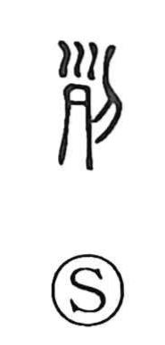

列

Uncategorized
Kun: wakeru, tsuraneru | On: retsu
row ・ line ・ to line up ・ to arrange ・ to sever ・ to divide
Explanation
列 is a compound of the graph for a severed human head—depicted as a skull with remaining hair—and the knife, 刀. In the earliest forms it denotes cutting off and separating the head from the body, hence the sense “to sever, to divide.” From the ritual practice of arranging skulls, vividly attested in Yin-period burials where pits contain sets of ten skulls with heads and trunks interred separately in rows stretching across the site, the character took on the meaning “row, line,” and by extension “to arrange, to line up, to link.” In sacred precincts, a row of skull-pits (sharetsu) set at entrances and exits functioned as a curse-barrier to ward off evil, reinforcing the notion of ordered alignment.